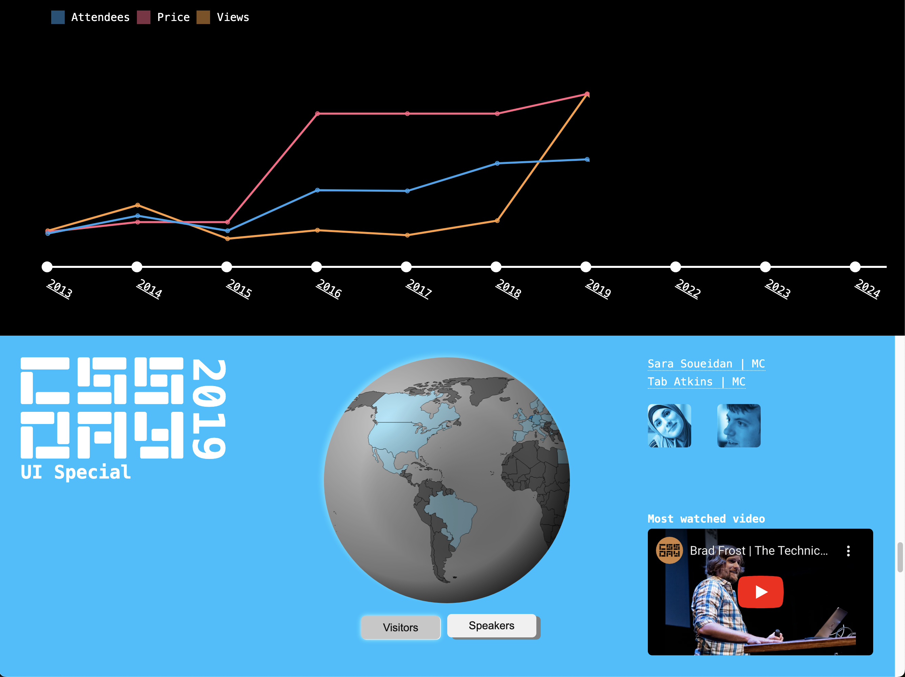

Hackathon
..-..-2024
Hackathon
Intro
PPK en Krijn Hoetmer hebben bij de minor web design en development een 3.5 daagse hackathon georaniseerd waarbij we kaartjes konden winnen voor CSS day.
De opdracht was om een website te maken voor het 10 jarige jubileum van CSS day. Hoe we het doen was volledig aan ons, we moesten alleen json gebruiken waar alle data in staat over de 10 jaren CSS day. Ook let de jury straks ook op toegankelijkheid, responsiveness, progressive enhancement en woordgrapjes zijn ook altijd welkom.
Aan het begin van de hackathon moesten we zelf groepjes maken en daarna zijn we meteen aan de slag gegaan.
Wat we hebben gemaakt
We hebben uiteindelijk een website gemaakt met 10 secties die elk data laat zien van een jaar. Boven de sections hebben we een grafiek gemaakt van bezoekers, het prijskaartje en views. Deze grafiek vult zich op terwijl je door de jaren heen scrolled doormiddel van scroll animations. Ook heb ik een wereldbol gemaakt waar de herkomst van de bezoekers en sprekers wordt ingevuld. Verder is er gelet op progressive enhancement voor als iets niet werkt. We werken namelijk met de nieuwe css features en dan kan het zijn dat dingen niet werken in sommige browsers. Ook hebben we het toegankelijkheid gemaakt door te letten op repsonsiveness, keyboard navigatie en dat nodige info wordt opgenoemd door de screen reader. Een voorbeeld hiervan is dat we ook dynamisch de description invullen aan da hand va wat er op de wereld kaart komt. Daarnaast hadden we ook nog een andere API gebruikt om de afkortingen van de landen om te zetten naar hele land namen. Dit is fijner voor mensen met een beperkt zicht. Helaas zijn we er wel achter gekomen dat die API niet meer werkt.
Dit is en foto van onze website, en daaronder kan je de links naar de website en code vinden.

Reflectie
De beoordeling die ik mijzelf gaf was was een 🏆 uit de [🏆😃🙂😐😢]. Dit komt daardat ik veel moeite in deze website heb gestopt en lange dagen heb gemaakt.
Ook moesten we reflecteren over welke voorgaande vakken in dit project zitten. Wafs zit in dit project doordat we API's hebben gefetched en bepaalde data hebben laten zien in een grote svg. CSS to the rescue zat ook in dit project. Dit komt doordat we scroll animaties hebben gebruikt om de grafiek mee te laten scrollen op onze jaren die ook op scroll snappen. En natuurlijk zit Browser tech er ook in. Dit komt doordat we hebben gekeken naar progressive enhancement, performance en toegankelijkheid.
Prijs
PPK en Krijn waren de juryleden en na hun ronde langs alle projecten gingen ze overleggen over wie had gewonnen. Even later maakte ze dat bekend en werd duidelijk dat ons groepje en een ander groepje samen hadden gewonnen en dus kaartjes kregen naar het twee daagse congress CSS day. En daar was ik natuurlijk heel erg blij mee.